# Radial Velocities <ul class="contents-list"> <li><a href="#/part-1"><strong>Part 1:</strong> Stellar Spectroscopy</a></li> <li><a href="#/part-2"><strong>Part 2:</strong> Spectrographs</a></li> <li><a href="#/part-3"><strong>Part 3:</strong> Resolution</a></li> <li><a href="#/part-4"><strong>Part 4:</strong> Extracting Radial velocities</a></li> <li><a href="#/part-5"><strong>Part 5:</strong> Planetary Signals in RVs</a></li> <li><a href="#/part-6"><strong>Part 6:</strong> Stellar Activity</a></li> <li><a href="#/part-7"><strong>Part 7:</strong> Modelling considerations</a></li> <li><a href="#/part-8"><strong>Part 8:</strong> Accessing data</a></li> <li><a href="#/part-9"><strong>Part 9:</strong> Project ideas</a></li> </ul> --- <h2 id="part-1" class="slide-part-title">Part 1: Stellar Spectroscopy</h2> <span class="fragment">Early spectroscopy found different spectral features and ordered A-O (with A showing the strongest Hydrogen lines)</span> <span class="fragment">[Annie-Jump Cannon](https://en.wikipedia.org/wiki/Annie_Jump_Cannon) reordered & simplified this system, and [Cecilia Payne](https://en.wikipedia.org/wiki/Cecilia_Payne-Gaposchkin) showed the fundamentally varying parameter was **surface temperature**.</span> <div style="text-align: center; width: 100%;"><img src="https://external-content.duckduckgo.com/iu/?u=https%3A%2F%2Fwww.researchgate.net%2Fprofile%2FXiangru-Li%2Fpublication%2F335346344%2Ffigure%2Ffig2%2FAS%3A933629706395648%401599606076448%2FThe-importance-scores-of-stellar-spectrum-features-on-the-JSP-spectral-data-The-above.png" style="height: 250px;" /></div> <!--<img src="https://external-content.duckduckgo.com/iu/?u=https%3A%2F%2Flibrary.cfa.harvard.edu%2Fsites%2Fg%2Ffiles%2Fomnuum1806%2Ffiles%2F2024-11%2Fstarspectra_rbg.jpg" class="r-stretch" />--> -v- #### Stellar Spectroscopy Stars all show a mix of two things: 1) **Blackbody emission** - <span class="fragment">Photons escaping hot interior</span> - <span class="fragment">Blackbody peak set by temperature (Wien's law)</span> - <span class="fragment">Hot stars: bluer, cool stars: redder</span> -v- #### Stellar Spectroscopy Stars all show a mix of two things: 2) **Absorption lines** - <span class="fragment">Photons pass through cooler outer layers</span> - <span class="fragment">Atoms and/or molecules absorb photons at specific quantum transitions (e.g. electron excitation) and reemit isotropically</span> - <span class="fragment">This removes flux from specific wavelengths</span> - <span class="fragment">Which atoms/molecules (and which transitions) absorb is dependent on temperature, composition, etc.</span> - <span class="fragment">Line shapes are additionally impacted by environment (surface temperature & gravity)</span> -v- #### Stellar Spectroscopy - We know _a priori_ what wavelength a set of absorption lines has _at rest_ (set by quantum mechanics). - <span class="fragment">Wavelength of absorption spectra -> the velocity of a star.</span> - <span class="fragment">Combining all spectral lines for a star (10,000s) produces the most precise possible velocity measurement.</span> --- <h2 id="part-2" class="slide-part-title">Part 2: Spectrographs</h2> - <span class="fragment">The highest-resolution modern spectrgraphs use **Echelle gratings**.</span> - <span class="fragment">This disperses a point source (from e.g. a fibre) along one dimension.</span> - <span class="fragment">Another prism disperses the 1D light into 2D across multiple orders</span> <div style="text-align: center; width: 100%;"><p>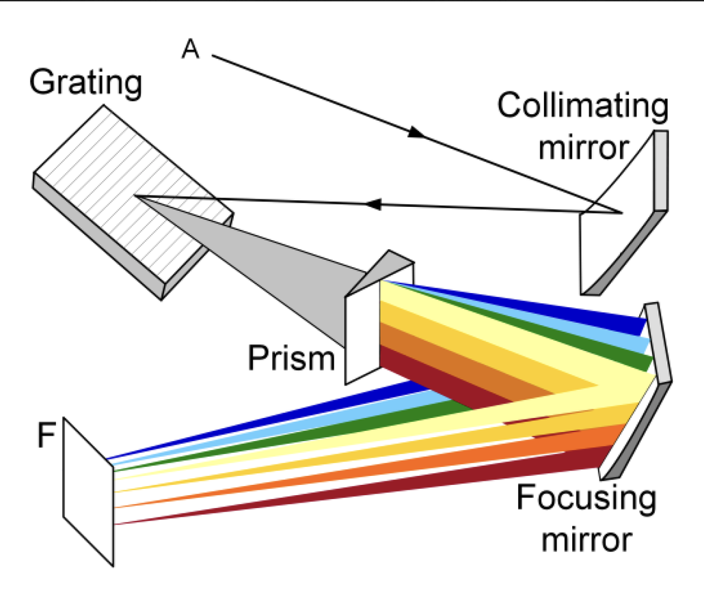</p></div> -v- ### Spectrographs <img src="https://buil.astrosurf.com/eshel2/vega.jpg" class="r-stretch" /> -v- ### Spectrographs - Modern spectrographs include HARPS, Maroon-X (on 6.5m Gemini), ESPRESSO (on 8m VLT), etc. - <span class="fragment">Placed in controlled temperature/pressure conditions to minimise thermal effects on measurements (mK control).</span> - <span class="fragment">The Echelle grating for ESPRESSO is 1.7m long & kept within a 10m$^3$ vacuum chamber</span> <div style="text-align: center; width: 100%;"><img src="https://external-content.duckduckgo.com/iu/?u=https%3A%2F%2Fwww.media.inaf.it%2Fwp-content%2Fuploads%2F2018%2F02%2Feso1806a.jpg" style="height: 250px;" /></div> --- <h2 id="part-3" class="slide-part-title">Part 3: Resolution</h2> - Spectral resolution is defined by the smallest difference in wavelength that can be resolved: <span class="fragment">$R = \lambda / \Delta\lambda$; so for 500nm and 0.05nm $R = 500 / 0.05 = 10,000$;</span> - <span class="fragment">How does this translate to velocity?</span> <span class="fragment">$\Delta v / c = \Delta \lambda / \lambda$</span> - <span class="fragment">So for modern spectrographs which have $R\sim150,000$, the velocity measurement error _from a single line_ is:</span> <span class="fragment">$\Delta v = c/R = 3e8/1.5e5 = 2000 m/s$</span> --- <h2 id="part-4" class="slide-part-title">Part 4: Extracting Radial velocities</h2> ### Marcy & Butler (Hamilton) approach <div style="text-align: center; width: 100%;"><p>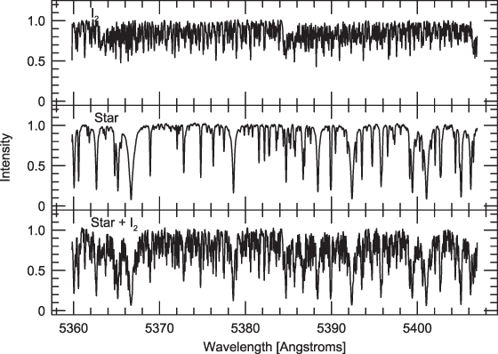</p></div> - <span class="fragment">Need to cross-match your target star with a spectrum with known wavelength</span> - <span class="fragment">Old approach: Observe stars through local **Iodine cell** - gas imprints absorption lines directly onto the stellar spectrum</span> - <span class="fragment">Position of Iodine lines may drift (local effects), but relative shifs of star to iodine should only be astrophysical</span> -v- ### Griffin (ELODIE) approach <div style="text-align: center; width: 100%;"><p>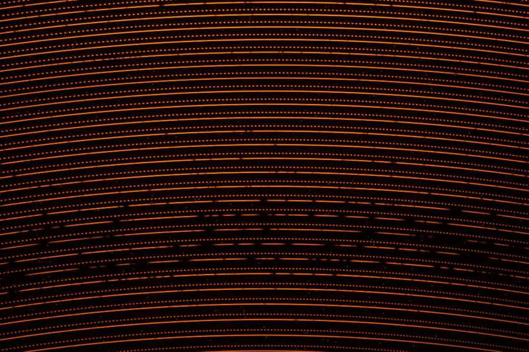</p></div> - <span class="fragment">Observe source simultaneously (or close in time) to:</span> - <span class="fragment">Local lamp producing sharp emission lines of known wavelength (of Uranium, Thorium-Argon, Iodine, etc)</span> - <span class="fragment">Fabry-Perot (or laser frequency comb); must be calibrated nightly to emission lamp lines. Often simultaneously observed.</span> -v- ## Template-matching cross-correlation - <span class="fragment">We need to compare **observed** stellar spectrum with either **modelled** or **observed** (e.g. template) stellar spectrum</span> - <span class="fragment">Modelled spectrum means we can compute the absolute offset from rest</span> - <span class="fragment">Template spectrum means we only compute a velocity **relative** to the average.</span> <div style="text-align: center; width: 100%;"><img src="https://petercbsmith.github.io/gallery/ccf%20slide%20w%20cred.gif" style="height: 250px;" /></div> -v- ## Cross-correlation masks <div style="text-align: center; width: 100%;"><p>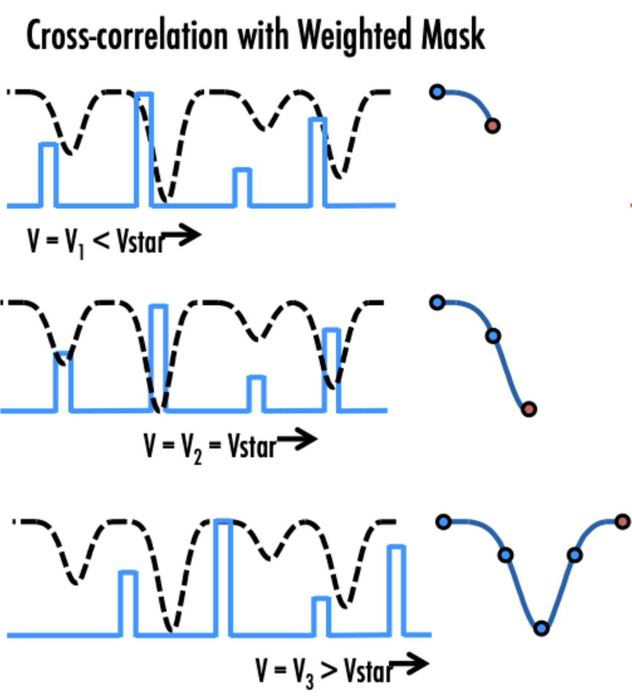</p></div> - <span class="fragment">In reality, a **mask** which marks in & outside of absorption lines (`continuum = 0`, `line = depth`) is used.</span> - <span class="fragment">This technique was used _before detectors_ in e.g. CORAVEL. A physical "mask" was mechanically moved in front of the spectrum within the instrument directly producing the cross correlation function from which a radial velocity could be recorded.</span> -v- - The resulting "Cross correlation function" is the **summed response of all absorption lines as a function of velocity**. - <span class="fragment">This easily allows radial velocity to be measured, and at a far higher precision than for a single line.</span> <img src="https://content.cld.iop.org/books/10__1088_2514-3433_ab46a3/revision3/bk978-0-7503-1689-7ch5f1_hr.jpg" class="r-stretch" /> -v- <p>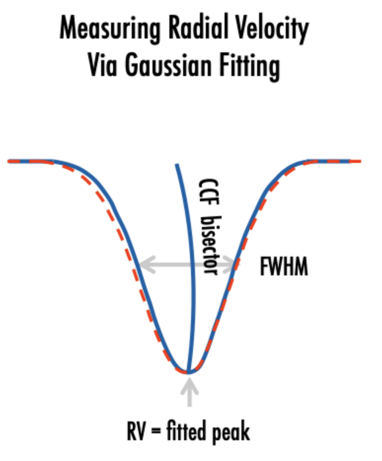</p> - <span class="fragment">You can also measure other important metrics from the CCF such as "FWHM" (line width) and "BIS" (line assymetry).</span> - <span class="fragment">These are good indexes to measure **stellar activity** (which can also vary radial velocity).</span> --- <h2 id="part-5" class="slide-part-title">Part 5: Planetary Signals in RVs</h2> Any Keplerian motion of the star causes changes in the radial velocity. <img src="https://external-content.duckduckgo.com/iu/?u=https%3A%2F%2Fstatic.wixstatic.com%2Fmedia%2F8dd287_2d88fdb56e5845189d223415d92da604~mv2.gif" class="r-stretch" /> -v- #### What impacts the RV signal? - <span class="fragment">Mass ratio ($K \propto M_2/M_1$)</span> - <span class="fragment">Orbital period ($K \propto P^{1/3}$)</span> - <span class="fragment">Orbital inclination ($K \propto \sin{i}$)</span> - <span class="fragment">Orbital eccentricity ($K \propto (1-e^2)^{-1/2}$)</span> -v- #### Deriving the semi-amplitude: $$ K = \frac{2 \pi a \sin{i}}{P\sqrt{1-e^2}} = \left(\frac{2 \pi G}{P}\right)^{1/3} \frac{M_p \sin{i}}{(M_s + M_p)^{2/3}} \frac{1}{\sqrt{1-e^2}} $$ -v- In more detail, we can derive it more completely: 1) <span class="fragment">The ratio in semi-major axes ($a_p/(a_p + a_s)$) is the inverse of the mass ratio ($m_p/(m_p + m_s)$). i.e. $a_s/(a_p + a_s) = m_p/(m_p + m_s)$</span> 2) <span class="fragment">Angular motion gives us orbital speed of a star/planet (assuming $e=0$): $K_p = v_s = \frac{2\pi a_s}{P}$; substituting for $a_s$, $K_p = \frac{2\pi}{P}\frac{(a_p+a_s) m_p}{m_p + m_s}$</span> 3) <span class="fragment">Kepler's third law $a^3 = G(m_p+m_s)P^2/4\pi^2$ (NB this uses relative motion, i.e. $a=(a_p+a_s)$) produces: $K_p = \frac{2\pi}{P}\frac{m_p}{m_p + m_s}\left(\frac{G(m_p+m_s)P^2}{4\pi^2}\right)^{1/3}$</span> 4) <span class="fragment">Simplifying gives: $K_p = \left(\frac{2\pi G}{P}\right)^{1/3}\frac{m_p}{(m_p + m_s)^{2/3}}$</span> 5) <span class="fragment">To adjust to _projected_ radial velocity we must include $\sin{i}$</span> -v- ### Improvement over time: <p>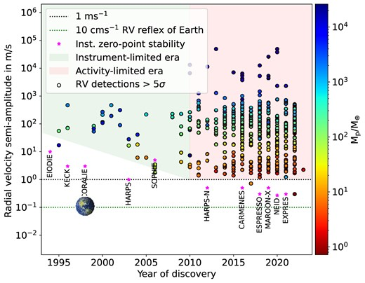</p> - From [Burt et al](https://arxiv.org/html/2511.01954v1) -v- ### Examples 1995 - Hot Jupiters <p>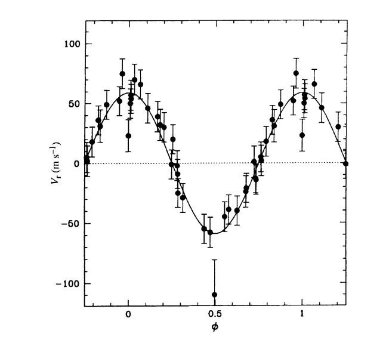</p> $K=60\,\rm{m}.\rm{s}^{-1}$ -v- ### Examples 2026 - sub-Earth planets <p>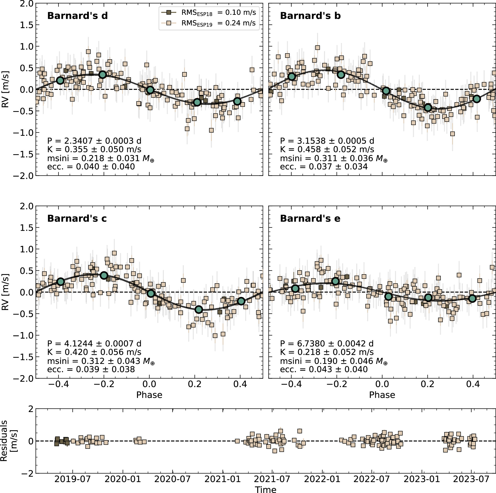</p> --- ## Detecting RV planets - <span class="fragment">Keplerians are **periodic**, so typically found by searching in frequency space, e.g.:</span> - <span class="fragment">[Lomb Scargle](https://iopscience.iop.org/article/10.3847/1538-4365/aab766)</span> - <span class="fragment">[Generalised LS](https://arxiv.org/abs/1412.0467) - performs better for gappy data.</span> - <span class="fragment">[L1 periodogram](https://github.com/nathanchara/l1periodogram) - searches for sums of sinusoids (less aliases for multi-planet systems).</span> - <span class="fragment">**Harmonics** in e.g. periodograms are very common:</span> - <span class="fragment">Near 1 day ($1±1/p$) due to nightly observations</span> - <span class="fragment">Near synodic period of the moon (29.5d), especially for _bright-time_ instruments</span> - <span class="fragment">Near 1 year (and 1/2, 2/3, etc)</span> - <span class="fragment">For multi-planet signals, you likely need to remove the influence of planet b to detect planet c.</span> -v- <p>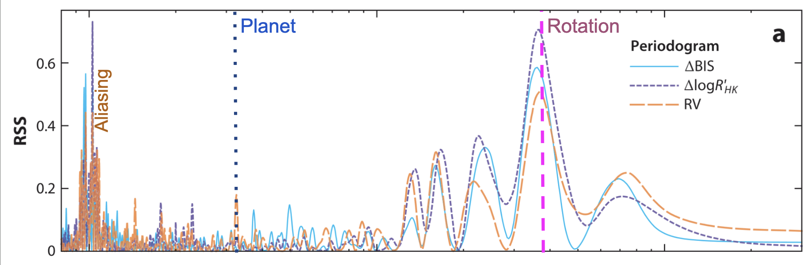</p> -v- ### Signal strength - <span class="fragment">Various metrics used to assess strength of RV signal:</span> - <span class="fragment">**Normalised $\Chi^2$** - used in standard LS</span> - <span class="fragment">**FAP - False Alarm Probability**:</span> - <span class="fragment">Computed from noise (assumed Gaussian/white) in the periodogram</span> - <span class="fragment">Typical threshold of <0.01 denotes a strong signal</span> - <span class="fragment">**Marginal posterior probability density** - used by BGLS:</span> - <span class="fragment">The probability of a signal at a given period</span> - <span class="fragment">Relative difference of 4.6 between peaks implies $e^{4.6}=100\times$ larger probability</span> - <span class="fragment">Bayes Factor (Evidence ratio / log evidence difference):</span> - <span class="fragment">Used by e.g. kima</span> - <span class="fragment">Typically Bayes Factor $>20$ (log Evidence ratio$>3$) is the standard for detection</span> - <span class="fragment">$3<BF<20$ ($0.5<\logZ<3$) shows a positive signal/tentative evidence</span> --- <h2 id="part-6" class="slide-part-title">Part 6: Stellar Activity</h2> <p>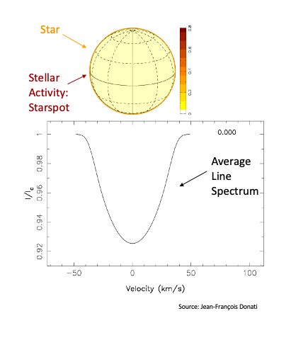</p> -v- ## Stellar Activity - <span class="fragment">Starspots are **cooler** regions on stars where convection is suppressed</span> - <span class="fragment">Faculae are **hotter** regions (more sparsely concentrated)</span> - <span class="fragment">Activity **rotates with the stellar surface** </span> - <span class="fragment">Stellar rotation typically 5-50d (Sun: 27d)</span> -v- ## Stellar Activity - We can measure additional signals linked to activity, and remove their influence on the RVs. - <span class="fragment">Techniques includes simple decorrelation, or more complex Gaussian Processes.</span> <div style="text-align: center; width: 100%;"><p>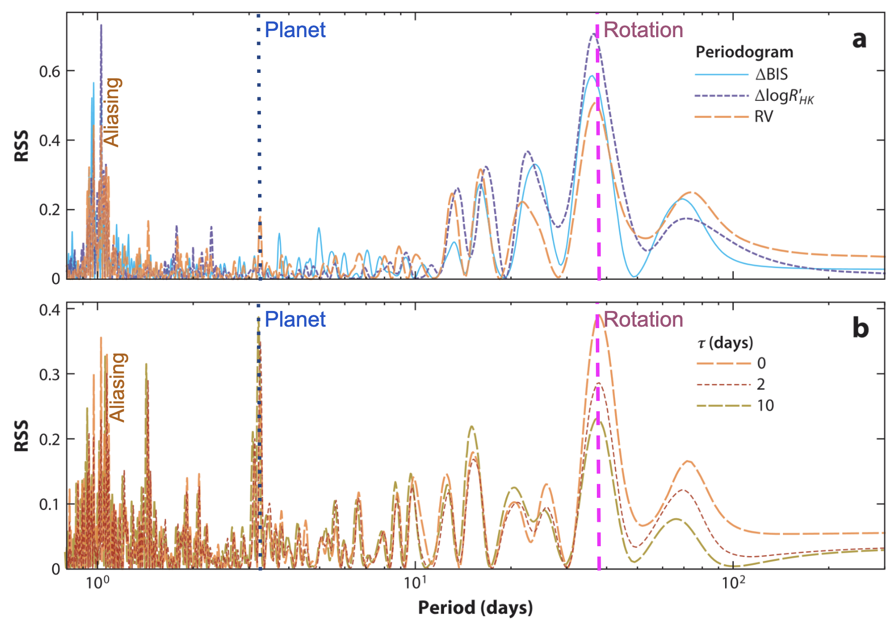</p></div> --- <h2 id="part-7" class="slide-part-title">Part 7: Modelling considerations</h2> - <span class="fragment">Each instrument has a different RV zero-point (or offset)</span> - <span class="fragment">Instruments may also have internal offsets due to changes in environmental conditions/reduction pipeline/etc.</span> - <span class="fragment">Some (e.g. template-matching) are fixed as median=0.0</span> - <span class="fragment">Others have offsets of 10-100m/s due to e.g. PSF shape, etc.</span> - <span class="fragment">So, for datasets with multiple observations, you need to model an offset parameter for each dataset</span> - <span class="fragment">Long-term trends (e.g. due to binary stellar companion) can be modelled as a **polynomial** trend</span> - <span class="fragment">For long-duration signals (e.g. P>8d), multiple RVs from one night can be averaged together</span> -v- ### Model comparison - <span class="fragment">We need quantitative evidence to say "we have found a signal". E.g.:</span> - <span class="fragment">Bayesian Hypothesis testing between with & without the planet signal:</span> - <span class="fragment">Bayesian Information Criterian (BIC) to punish flexible models</span> - <span class="fragment">WAIC using leave-one-out (LOO) includes predictability of RV model</span> - <span class="fragment">log Evidence ($\log{Z}$)/Bayes factor - not possible with MCMC/HMC (requires nested sampling, e.g. with kima)</span> --- <h2 id="part-8" class="slide-part-title">Part 8: Accessing data</h2> - <span class="fragment">Unlike for all-sky surveys, RVs require targetting specific stars, often with private observatories</span> - <span class="fragment">The process of reducing extremely large raw detector images to precise RVs is often complex/resource-intensive, and even if raw data is available reduced RVs may not be.</span> - <span class="fragment">Thus open access RV data is (unfortunately) rare</span> - <span class="fragment">Exceptions are:</span> - <span class="fragment">Data from historical European Southern Observatory spectrographs e.g. HARPS, ESPRESSO, CORALIE (accessible on [DACE](https://dace.unige.ch/spectroscopyDatabase/?))</span> - <span class="fragment">Data published in publications (many also uploaded to DACE)</span> - Some historical surveys via Vizier (e.g. [80000 HIRES/Keck RVs on Vizier]( <span class="fragment">http://cdsweb.u-strasbg.fr/cgi-bin/qcat?J/A+A/), [spectra from SOPHIE](http://atlas.obs-hp.fr/sophie/index.html), etc)</span> - <span class="fragment">Solar data (e.g. [HARPS-N](https://eprv-rcn.github.io/resources/tutorials/harpsn_solar_download/), [NEID](https://neid.ipac.caltech.edu/search_solar.php), [KPF](http://koa.ipac.caltech.edu/cgi-bin/KOA/nph-KOAlogin)</span> -v- # Which datasets? - <span class="fragment">Unlike previous examples, you should not presume to be able to use data on all planets - best to focus on systems with easily-accessible data</span> - <span class="fragment">I recommend:</span> 1. <span class="fragment">**Higher precision** echelle spectra (e.g. HARPS, CORALIE, SOPHIE)</span> 2. <span class="fragment">**Large-amplitude signals** (e.g. Giant planets $0.2<M_p<10 M_{\rm Jup}$)</span> - <span class="fragment">A reasonable project might study:</span> - <span class="fragment">One star with hundreds (or thousands) or RVs in detail (e.g. multiple planets, activity, etc)</span> - <span class="fragment">A handful of stars with "easy" detections, and looking at trends</span> --- <h2 id="part-9" class="slide-part-title">Part 9: Project ideas</h2> ### General advice - <span class="fragment">[DACE](https://dace.unige.ch/spectroscopyDatabase/?) hosts the best collection of RV data and has API/python module20x</span> - <span class="fragment">Exploring what planets have data on DACE is not so simple (may be able to download archive)</span> - <span class="fragment">While DACE does offer interactive RV fitting tools, activity detrending, etc...</span> - <span class="fragment">It is best to download the RVs and use `kima`, `pyorbit`, `radvel`, etc.</span> - <span class="fragment">We have strong prior information on the eccentricity of the exoplanet population (e.g. Kipping 2013); using this can help improve your fits</span> -v- ## Project ideas: - <span class="fragment">What's orbiting Tau Ceti (18000 RVs; 14 instruments)?</span> - <span class="fragment">Is 51 Peg b alone?</span> - <span class="fragment">Is the inner transiting planet visible in $pi$-Mensa RV data? How does knowledge of its period from transits change the derived parameters?</span> - <span class="fragment">How many planets are there around HD 176986?</span> - <span class="fragment">Given a sample of giant planets ($75<Mp<600 M_\odot$):</span> - <span class="fragment">Can you find any unidentified candidate planets?</span> - <span class="fragment">Are Hot Jupiters lonely, or often with companions planets?</span> - <span class="fragment">Are warm giants more eccentric than hot/cold giants?</span> - <span class="fragment">Does planetary mass vary a function of stellar mass and/or metallicity?</span> -v- ## Other advice: - <span class="fragment">Outliers likely need identifying/removing.</span> - <span class="fragment">Could compute the stability of systems using e.g. [SPOCK](https://spock-instability.readthedocs.io/en/latest/)?</span>